Third person only: in first person the game's own animations play. Delete a pak from Mods/tpv_animations/Data to remove that animation.
TPV Animations on GitHub
The game has no idle gestures for Henry. While he stands still he now plays one of these at random every few seconds, with the game's own idle in between (tpv_animations_idle.pak, needed for any gesture).
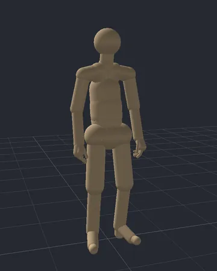
tpv_animations_idle_neck_stretch.pak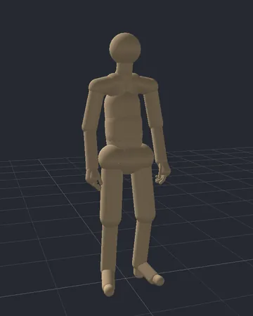
tpv_animations_idle_back_stretch.pak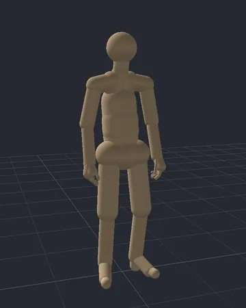
tpv_animations_idle_scratch_face.paktpv_animations_idle_forehead_wipe.paktpv_animations_idle_yawn.pak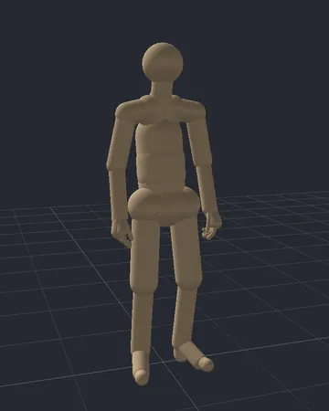
tpv_animations_idle_spit.pak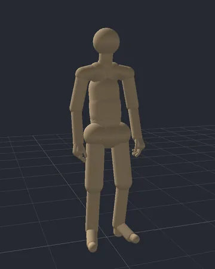
tpv_animations_idle_look_around.pak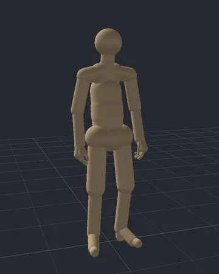
tpv_animations_idle_weight_shift_left.paktpv_animations_idle_weight_shift_right.paktpv_animations_idle_fidget02.paktpv_animations_idle_fidget03.paktpv_animations_idle_fidget04.pak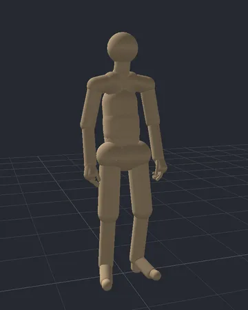
tpv_animations_idle_fidget05.paktpv_animations_idle_fidget07.paktpv_animations_torch_sprint.pak)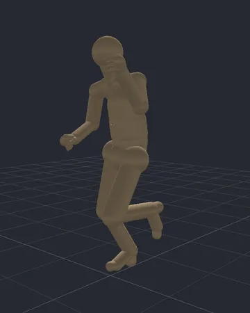
relaxed_sprint_fast_player + holditem_sprint_medium_torch_lhand_over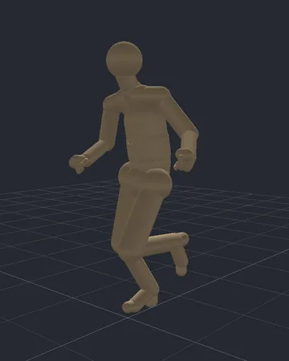
tpv_animations_drunk.pak)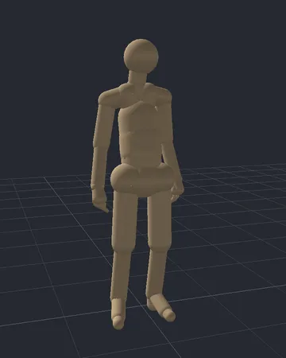
drunkard_idle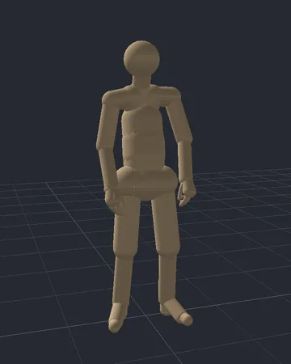
Previews play on the Animation Framework Studio mannequin. The torch is not drawn.